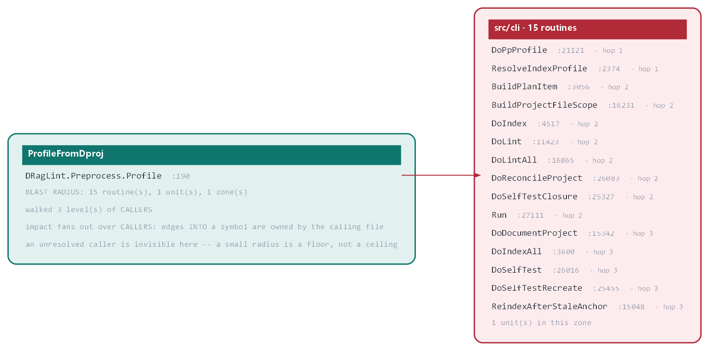
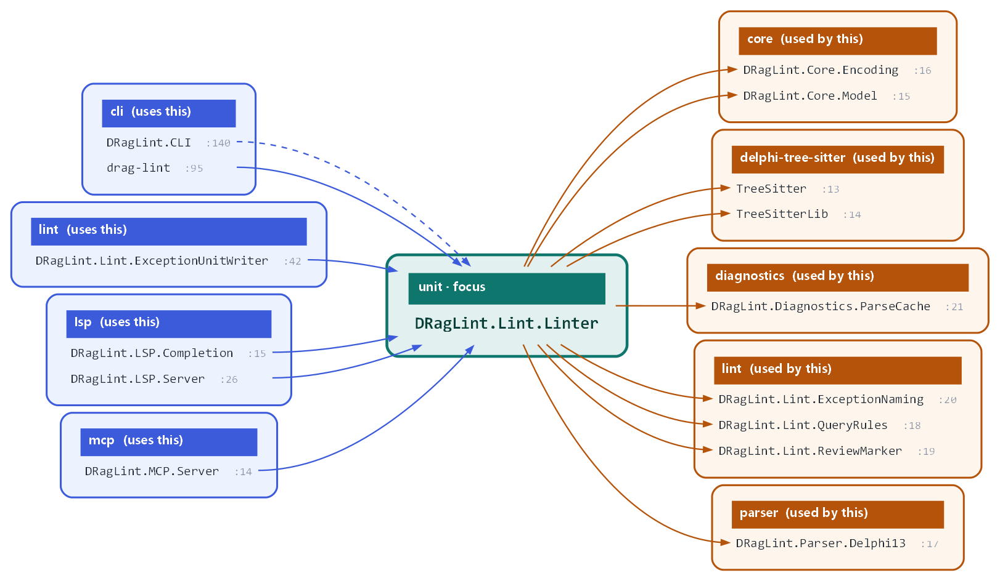
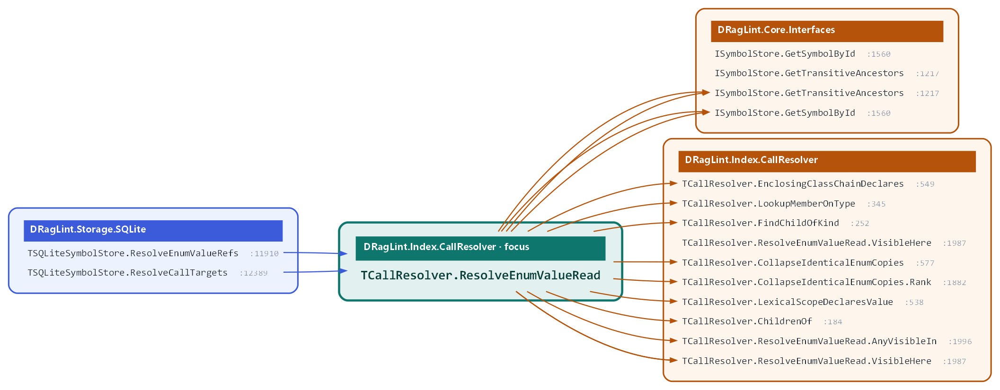

drag-lint + Component Converter
Feature list · 23 September 2026 · drag-lint 1.17.0-alpha
(index extractor 1.18.0-alpha, call resolver 1.6.0-alpha, schema 23)
Supersedes the 16 September 2026 edition (1.13.0-alpha). New in this edition: a
"What is new" chapter at the front, chapter 12 (Diagrams and charts), a complete
command reference (Appendix B) and a complete lint-rule catalogue (Appendix C).
Chapters 1-11 keep their numbers.
What it is. drag-lint is an AST-exact symbol index, linter and refactoring
engine for Delphi / Object Pascal. It parses your code with tree-sitter into a
SQLite index, then answers questions about it -- symbols, callers, types,
dependencies, documentation -- without a compiler and without the IDE having the
project open. The Component Converter is a rules-driven system built on that
index for migrating legacy VCL components to modern replacements.
Status badges used in this edition.
SHIPPED / READY in the build or tool-set this document describes;
IN PROGRESS being implemented now;
PLANNED an implementation plan exists;
SPECIFIED a design spec exists, no plan yet;
PROPOSED an idea written down, not yet designed;
OWNER DECISION waiting on a ruling rather than on effort;
OPEN DEFECT a known wrong answer being tracked;
PARKED deliberately on hold.
What is new since the 16 September edition
Changes between 1.13.0-alpha (16 September) and 1.17.0-alpha (23 September):
releases 1.14.0, 1.15.0, 1.15.1 and 1.16.0, plus the 1.17.0 work recorded under
"Unreleased" in the CHANGELOG. Every figure below is quoted from the CHANGELOG or the
commit that measured it.
Enum values are now references (resolver 1.6.0-alpha)
Until this release a read of an enum value -- cmdDelta, or
TCommandID.cmdDelta -- was recorded but never tied to the value it names,
on every index ever built. It now is, by name and scope: the value must be
visible from the reading unit, exactly one candidate may qualify, and a same-named
local, parameter, member or unit-level declaration makes the engine decline rather
than guess. The result is either certain or nothing.
- Who reads this value?
query find-callers --name cmdDelta --resolved lists every bound read, tagged [certain, read]. On ORM3 CLIENT, cmdTableLoad now shows 42 reads and cmdDelta 38; both were 0 before.
- Removing an enum member is caught before the build.
lint-tree reports a removed member as a stale reference at every bound read in the dependent closure. A member whose ordinal moved gets a different, truthful message: the code still compiles, but any ordinal already stored or transmitted now means a different member.
- Two stated caveats. Scoped enums (
{$SCOPEDENUMS ON}): measured 0 wrong bindings across all 33 project databases (13,443 bare reads bind, none to a scoped value); the platform libraries were not measured. with blocks: the engine does not model with scope, and on ORM3 CLIENT 178 bound bare reads sit inside a routine that contains a with -- verify those against the declaration. Qualified reads are unaffected by either. The new rule enum-read-inside-with (below) makes the with case visible.
- Upgrade cost: derived data only, so a re-resolve, not a re-parse -- about 6 minutes for all project indexes and roughly 70 minutes per platform library (
index --all --resolve-only).
Purity v2: "effect-free" is now proven, not guessed (resolver 1.5.x)
The generated documentation used to label a routine Pure when its own
body touched no field, parameter, file or SQL. That could not see past the routine:
a routine writing a global, and every routine calling it, was labelled Pure. A new
purity stage in the resolve pass now computes an effect summary for every
routine across the whole call graph, to a fixed point, and stores three facts per
routine -- effect_free, effect_summary and
effect_witness (the reason it is not effect-free).
- Documentation and hover say Effect-free (proven) only when the stage proved it; absence claims nothing. Hover JSON carries the three
effect_* keys.
- Measured: 2,896 of 10,150 routines proven effect-free on ORM3 CLIENT; 193 of 2,922 (7%) on drag-lint's own index on first run. Both figures are upper bounds until the affected indexes are re-parsed (commit 2fad5cef).
- Two new project-wide rules, both off by default:
discarded-effect-free-result (an effect-free function called and its result thrown away) and query-name-with-effect (a Get*/Is*/Find*... routine that also changes state). Measured with --enable: 3 findings, and 6 / 5 / 0 / 54 on CLIENT / DataCopy / YADF / drag-lint.
- Owed: about 850 stored
Pure lines in this repository (259 in DataCopy) await one regeneration pass, deliberately deferred until the libraries are re-resolved.
Three rules built on the new facts
Proposed, built and merged the same day the facts they stand on landed. The
catalogue moves to 188 rules (135 built-in, 158 on by default).
enum-read-inside-with (bug pattern, warning, on by default) -- a bare name inside a with body names both an enum value and a member of the with target: the compiler binds the member, the index records the enum value. The one wrong-binding channel this release measured, now reported where it happens.assert-with-side-effect (project-wide, warning, off by default) -- a routine with a proven effect is called inside Assert; Release builds compile Assert out, so the effect happens in Debug only. Needs an index resolved with the purity stage; an unknown effect never fires.ifdef-undefined-symbol (project-wide, warning, off by default) -- an {$IFDEF} / {$IFNDEF} / defined() tests a symbol no build of the project defines, so the branch is dead. Measured 175 findings on ORM3 CLIENT, all deliberate trace switches such as TRACE_CODESITE rather than typos -- which is why it ships off; known switches go in the ifdef_allow configuration key.
A forward declaration is no longer counted as a class
TFoo = class; completed later in the same unit used to appear as a second
class: two rows from query, two completion entries, and class metrics that
parented every descendant to the empty stub. Every by-name lookup now folds the stub
into the real declaration (query prints forward at line N, hover
leads with forward declaration -> line N, outline keeps both rows
and tags the stub). No re-index needed.
Conditional compilation now matches what MSBuild compiles (extractor 1.18.0-alpha)
The define profile read only the Base and configuration property groups of a
.dproj, and missed the per-platform groups MSBuild also applies. On ORM3 CLIENT
EUREKALOG is defined only per platform, so an {$IFDEF EurekaLog} uses
block was treated as inactive and one unit the compiler does build dropped out of
the index (625 -> 624 files). All four groups are now read, in MSBuild order.
Because this changes which branches are parsed, every index re-parses once (about
3 hours 17 minutes for the whole estate, measured 17 September).
Also shipped since 16 September (1.14.0 - 1.16.0)
- Property and field references resolve (resolver 1.3.0).
find-callers --resolved on a property or field lists each access as [certain, read] or [certain, write]; lint-tree reports every stale reference when a public property is removed (it previously reported "0 places" for a property with 207 dependents).
- Generic types resolve by arity (extractor 1.17.0, schema 23).
TObjectList<T> climbs to the generic TList<T>, not the unrelated System.Classes.TList; ORM3's 134 descendants of TMicObjectBase<I> now resolve their base.
- Inherited fields appear in a method's
Reads:/Writes: facts, own fields first. Nested-routine and inline variables are indexed.
- Exceptions a routine handles -- a new
Catches: fact, e.g. Catches: EConvertError (dialog: ShowMessage); Exception (re-raise), with dispositions re-raise, raises X, dialog, empty and swallowed.
- The converter no longer drops image data. Class casts are realised in code, and a streamed image whose format the target accepts is carried byte-for-byte; one it cannot carry is reported loudly rather than dropped. This was the destructive limitation flagged in the previous edition.
- Unlinked source properties are warned, as "dropped on N of M converted instances", and a
#link between two properties of the same class carries every sub-property automatically.
- New verb
glyph-vacuum -- measures every streamed graphic in a form tree (format, size, strip count) before a glyph rule is written. Measured on the M2022 extraction tree: 223 forms, 2,721 graphics, 673 distinct.
- Rule editor -- class list with checkboxes, origin marks and a partial-name search; named filters and persistent "do not convert" marks; several rules per source class across rule books; double-click loads a rule's source and target together; "already used" marks now require the right receiver and real code.
duplicate-global-decl library tier -- a project global that re-declares an RTL name it uses (44 genuine findings on ORM3 CLIENT). Two false positives fixed: a version string read as an IP address, and a reviewed suppression reported as unnecessary.- Smaller fixes:
context resolves Class.Member and lists every field of a record; uses-report --name matching no unit now fails instead of writing an empty report; dataset-open-without-close no longer fires on a field named Open.
The previous edition's roadmap, scored
| Item in the 16 September roadmap | Status now |
|---|
| Realize class casts in the converter (A.1) | SHIPPED 1.14.0 -- image payloads carried when compatible, reported when not |
| Generic base-class resolution (A.2) | SHIPPED 1.15.0 |
| Inherited fields in analysis (A.2) | SHIPPED 1.15.0 |
| Exceptions a routine handles (A.2) | SHIPPED 1.14.0 (Catches:) |
| Nested-routine variables (A.2) | SHIPPED 1.15.0 |
| Property references (A.2) | SHIPPED 1.14.0 (resolver 1.3.0); enum values followed in 1.17.0 |
| Numbers as searchable facts (A.2) | PROPOSED -- carried forward; no open note tracks it (A.4) |
| Calls across process boundaries (A.3) | READY -- protocol-trace and crosses-boundary charts (chapter 12), on the enum-value binding |
| Visual code map (A.3) | IN PROGRESS -- chart pipeline with Graphviz layout and click-to-source is ready (chapter 12); the standalone viewer continues |
| Trustworthy "already used" marks (A.4) | SHIPPED -- receiver-checked, comments skipped |
| Two lint false positives (A.5) | SHIPPED 1.14.0 |
1. Indexing and the code database
- AST-exact indexing via tree-sitter grammars for Pascal and DFM -- no regex, no string-literal or comment noise.
- One database per project, stored beside the project in
_D-RAG\, plus per-platform library indexes for the RTL/VCL and third-party code.
- Compile-closure indexing -- a project index contains exactly what the compiler sees: project members, transitively used project-local units, each unit's sibling
.dfm, and its {$I} includes. Loose unreferenced files stay out.
- Build-accurate conditional compilation (improved) -- the define profile is read from all four MSBuild property groups (base, configuration, and the per-platform variant of each), so the branches indexed are the branches compiled.
- Generics by arity (new) -- generic types and methods are indexed under their bare name with their parameter list; ancestry resolves by parameter count, so a generic base is never confused with a same-named non-generic class.
- Library and browsing-path scans read the IDE's own registered paths (Win32 + Win64, or every platform including Android / iOS / Linux / macOS).
- Incremental re-indexing with per-file fingerprints -- only changed files are re-parsed; interrupted runs resume rather than restart.
- Resolve-only mode re-derives call edges, ancestry, helper targets, member and enum-value bindings and purity verdicts from parses the index already holds, skipping the file walk entirely.
- Watch mode re-indexes on file change at a configurable interval.
- Cross-database resolution -- a project index can consult a library index for calls it cannot resolve locally, without ever inventing an edge.
- Parallel indexing across configurable job counts, driven by a named manifest so a whole estate rebuilds with one command.
- Project registration and reconciliation -- add a project to the manifest, and sync its
.dproj / .dpr member list against the units it actually uses.
- Full-text index (FTS5, unicode + trigram) over source text, comments, DFM content and SQL.
2. Search and navigation
- Symbol lookup by name, qualified name, or substring -- exact, fuzzy and case-sensitive modes, filterable by symbol kind. A forward declaration is folded into its real declaration (new).
- Find callers / find callees for any routine, method or event handler, with surrounding source context. With
--resolved, precise per-target answers now cover properties and fields (read / write) and enum values (read) (new).
- Which unit declares this? -- resolves a symbol to the unit you need to add to a
uses clause.
- What implements this interface? -- hovering an interface lists the classes that implement it and, separately, the interfaces that extend it.
- Type-at-position -- resolve the identifier at a file/line/column.
- Text, message and caption search across
.pas, .dfm and .sql -- string literals, DFM captions, SQL exception text and comment prose, with exact-phrase, any-order and substring matching.
- Declaration-clause search -- finds declarations by clauses the index does not model (
stored IsFontStored, default 0).
- Unit outline -- every type, method and its line, without opening the file.
- Where-used / usages reporting across the whole indexed estate.
- Concept lookup -- routes a human phrase ("the scheduler", "delta streaming") to the owning symbol via topics authors write in ordinary
/// comments.
3. Dependency and architecture analysis
- Circular-dependency detection with generated cycle reports that explain why a cycle exists and recommend a fix.
- Uses-clause audit and auto-fix -- unused units, misplaced interface/implementation entries, missing units.
- Impact analysis -- the transitive blast radius of a symbol, by depth.
- Interface-edit impact before the build --
lint-tree reports every dependent reference an edit to a unit's interface would break, now including removed properties, fields and enum members (extended).
- Call graph and butterfly view -- callers and callees composed into one navigable chart (DOT, Mermaid, text or JSON).
- Reverse call tree to arbitrary depth, and the shortest resolved call path between two routines.
- Effect analysis (new) -- which routines are proven free of side effects across the whole call graph, and, for the rest, a one-line witness saying why.
- Third-party dependency reporting -- what your code pulls in from where.
- Spring4D dependency-injection wiring -- interface to implementation class, lifetime, and resolve sites.
- Class surface and code slices -- the public interface of a type, or a minimal self-contained compilable slice.
- Type hierarchy -- ancestors (with generic type arguments), descendants and class helpers.
4. Linting and auto-fix
188 rules across 16 categories -- 135 built-in and 53 external
.scm rules, 158 enabled by default, and 23 with an automatic
fix. Rules can be enabled, disabled, re-prioritised and parameterised per
project; individual findings can be suppressed with an accountable, reviewed
annotation rather than silently ignored. Every rule is listed in Appendix C.
| Rule group | Rules | Covers |
|---|
| Object lifetime and resources | 17 | Use-after-free, double-free, leaked objects, unprotected create/free without try-finally, destructors not marked override, missing inherited calls, FreeAndNil on an interface, object/interface dual-handle mixing, unreleased critical sections, virtual calls from a constructor, instantiating a class with an unimplemented abstract method |
| Exceptions and control flow | 18 | Bare and empty except blocks, swallowed exceptions, raise or Exit / Break inside finally, re-raising in a way that loses the stack trace, raising the root Exception class, unreachable duplicate handlers, exceptions constructed but never raised, unreachable code after Exit, loops that run at most once, empty conditional / loop / case / procedure bodies |
| Logic, comparisons and type safety | 20 | Operator-precedence traps (not X in S, not A = B), comparisons that are always true or always false, identical operands, self-assignment, off-by-one loop bounds, float equality, string and case-insensitive comparison mistakes, division by literal zero, Format() argument count and specifier type mismatches, non-exhaustive case on an enum, unguarded hard casts, lossy Unicode-to-Ansi casts |
| Data flow, concurrency and source integrity | 16 | Use before assignment, Result or out parameters not set on every path, values overwritten before being read, write-only locals, loop variable used after the loop, UI access from a background thread, Sleep on the VCL main thread, with silently shadowing an outer symbol, an enum value read inside with that the compiler binds to a same-named member (new), destructive actions gated on a file-existence check, unnamed literal constants, and syntax or unbalanced begin / end errors |
| Dead code and project hygiene | 38 | Unreachable and unused code (12), project-wide checks that only a whole-project run can see, such as unused public symbols, unused units and -- new, off by default -- discarded effect-free results, query-named routines with side effects, side effects inside Assert, and {$IFDEF} symbols no build defines (19), structural issues (7) |
| Complexity and maintainability | 30 | Complexity limits (11), size and shape metrics (8), refactoring opportunities (11) |
| Conventions and documentation | 26 | Naming conventions (10), documentation completeness and accuracy (5), review markers (5), other (6) |
| Security, platform and data access | 23 | Security issues including injection and unsafe API use (10), platform and portability (10), FireDAC-specific data-access (3) |
| Total | 188 | 8 groups, drawn from the engine's 16 rule categories |
- Two scopes -- single file, or whole project. Project-wide rules can only fire in a whole-project run.
- Fact-driven rules (new) -- rules can now key on proven facts from the resolve pass (effect summaries, enum-value bindings and the full define profile -- three such rules are new in this release), not only on the shape of the syntax tree.
- Auto-fix -- preview or apply, targeted by file, line or rule.
- Severity model -- error, warning, info and hint, mapped to the IDE's own colour scheme.
- Machine-readable output -- JSON and SARIF for CI; baselines so CI reports only new findings.
- Ownership scoping -- vendored and third-party roots are reported as skipped by name, never silently dropped from the count.
5. Compiler-less diagnostics and compile checking
- AST diagnostics without a build -- unbalanced
begin / end, undeclared identifiers, and structural errors found by parsing alone.
- Semantic compile-check from the CLI -- spawns the real compiler against a file or project and returns hints, warnings, errors and fatals as JSON.
- Ghost-compile of unsaved buffers -- compiles what is currently in the editor, in a separate process, so real compiler errors appear as you type without saving and without freezing the IDE. Each unsaved buffer is staged into a temporary shadow directory and compiled there, in full project context; your source files are never written.
- Build-log import -- fold an existing compiler log into the findings view.
- Preprocessor awareness -- conditional-compilation branches are resolved so inactive code is not misread as active;
pp-profile prints the exact define set a project, platform and configuration produce.
6. Documentation
- DocInsight support -- native Delphi
/// XML doc comments, rendered in the IDE's own Help Insight tooltips.
- Automatic documentation generation -- summaries, parameters, returns, exceptions and cross-references derived from the index, for a symbol, a unit or a whole project.
- Documentation drift detection -- finds comments that no longer match the code they document, including parameters that no longer exist.
- Undocumented-symbol reporting, filterable by kind and visibility.
- Deprecation and version tracking -- find symbols tagged deprecated or carrying a
since annotation.
- Exception documentation -- what a routine raises, traced transitively through the calls it makes, and (new) what it catches and what it does with each (
Catches:).
- Proven effect-freedom (new) --
Effect-free (proven) replaces the old locally-guessed Pure label.
- Implementor documentation -- an interface's declaration records which classes implement it and which interfaces extend it.
- Manual export -- the full documentation set as PDF and Word.
7. Refactoring and code actions
- Cross-unit rename, with preview before applying; routine-local parameter and variable rename.
- Extract method.
- Safe delete -- refuses when references remain.
- Uses-clause quick fixes -- add the missing unit, remove the unused one, compiler-verified.
- Enum helper generation.
- Exception-class synchronisation -- generates named exception classes from
raise sites and rewrites those sites to use them.
- Local-variable cleanup.
- Code formatting through YADF, with a minimum-version gate, a post-format check that only layout changed (restoring the file if it did not), and a preview mode that writes nothing.
- Test-helper scaffolding generated from the real class surface.
8. AI and tooling integration
Context bundles -- assembles exactly what an AI assistant needs to work
on a symbol (documentation, class surface, the symbol's own body, and a capped
set of callers) instead of whole source files. Measured roughly 60x
leaner on a real project (~556 tokens versus ~33,762), and 269x on this
engine's own largest unit (~1,259 versus ~338,500). Class.Member task
names now resolve when unambiguous, and a record's surface lists every field.
- MCP server with 15 tools for Claude, Cursor and other MCP clients -- symbol lookup, callers, linting, documentation, doc-tag and undocumented search, impact, DI wiring, class surface, code slice, context bundle, type-at-position, rename, AST checks and compile check.
- JSON everywhere -- every query verb emits structured output for scripting; hover JSON now carries the effect facts.
- Guarded read-only SQL over the index for questions the verbs do not cover, with a self-documenting live schema.
- Engine self-report --
info reports product, extractor and resolver versions and, per database, whether it is current, owes a re-resolve, or owes a re-parse, with the remedy.
- Obsidian export and graph export for external analysis.
9. Editor and IDE integration
- Language server (LSP) -- hover, go-to-definition, find-references, workspace symbols, completion and signature help, answered from the index across every project at once, with no compiler and no project open. Hover on a forward declaration now shows the real one; completion offers a forward-declared type once.
- Proxy mode -- runs alongside RAD Studio's own language server and relays between it and the IDE, so you keep the compiler front end (generics,
with, inline variables, unsaved buffers) instead of trading it away.
- RAD Studio 13 plugin -- 66 entry points across four surfaces: 50 main-menu items, 2 tool windows, 13 on the Structure view's right-click menu, and 1 on the Project Manager. Includes 12 Ctrl+Alt shortcuts.
- In-editor diagnostics -- gutter markers and wavy underlines, coloured from the IDE's own scheme, with hover tooltips.
- Dockable panels -- Structure, Usages and Call Graph, all click-to-navigate.
- Rebuild without closing the IDE --
ide-release asks the plugin to stand its engine down for a set time; shutdown stops running language-server engines over a per-user named pipe.
- VS Code extension -- findings in the Problems panel on save, a Pascal TextMate grammar, and a colour theme generated from your own RAD Studio scheme. It runs a private copy of the engine, so an open window never blocks a rebuild.
- Zed -- tree-sitter highlighting today.
- Any LSP editor -- Neovim, Helix and others point at the same server.
10. Reporting, maintenance and integrity
- Reports -- dead code, TODOs, compiler hints, top symbols, forms inventory, dependency and cycle reports.
- Index freshness verification -- proves every configured database is current rather than relying on a per-query guess, and names whether a stale one needs a re-resolve (minutes) or a re-parse (hours).
- Database maintenance -- schema inspection, migration between layouts, and resolution of which database answers for a given project, file or platform.
- Library drift detection -- registry library roots whose source is on disk but not yet indexed.
- Crash recovery -- detects and restores files left modified by an interrupted operation.
- Findings history -- refresh and diff findings between runs.
- Project wiki -- reference topics authored in the units themselves, so the explanation lives with the code.
11. Component Converter
A rules-driven system for migrating legacy components (for example Orpheus
TOvc* controls, or BDE data access) to modern replacements such as
DevExpress or FireDAC -- across every surface a component touches, not just the
declaration.
Conversion rules language
- A documented DSL with 13 directive kinds, a superset of the reFind format -- covering type conversion, property and event linking, defaults, notes, unit add/remove/swap, regular-expression rules, and reusable named value mappings.
- Property and event linking between source and target components, including value casts where the two components express the same idea differently.
- Whole-object links (new) -- linking two properties of the same class (
Font to Font) carries every sub-property the form streams; when the classes differ, every leaf must still be named, because an invented target path is how a form stops loading.
- Reusable value mappings with conditional branches, so an enum or a set of related properties translates once and is applied wherever needed.
- Tagging -- rules can be labelled so a single rule book serves several migration jobs.
- Validation against reality -- every referenced property path is checked against the real property tree of the real class in the index.
Conversion engine
- Rule scaffolding -- generates a valid, ready-to-edit rule file from the actual property trees of the source and target classes.
- Five-surface rewrite -- declaration type,
uses clauses, the .dfm, every property and event access site in code, and runtime construction sites.
- Value and class casts realised (new) -- a cast with a code template is applied at every access site; a cast found without a template, and a cast not found at all, are reported as two different problems because they need two different fixes.
- Image payloads carried, never silently dropped (new) -- the image format is sniffed from the bytes; a format the target accepts is carried verbatim, anything else is reported as a warning naming the instance, the property, the format found and the formats accepted.
- Unlinked-property warnings (new) -- a source property that no rule carries is reported once per type as "dropped on N of M converted instances"; a minority count, the controls somebody deliberately styled, is the stronger signal.
- Graphics census (new) --
glyph-vacuum decodes every streamed graphic under a folder tree and writes per-instance and per-class tables plus a visual gallery, as the measured input to glyph rules.
- Dry run by default, backups and a recovery file on every write, selective application to named components, and a machine-readable remainder as typed JSON items.
- Cast library -- shared value-translation blocks reused across rule books.
Rule editor (ConvRulesEditor)
- Visual rule authoring -- a Windows desktop application that turns rule writing into a mapping exercise rather than text editing.
- Three-column mapping grid -- source properties, assigned targets, and the pool of unassigned targets -- with assign, unassign and double-click in place.
- Completion tracking, real property trees from the index, auto-match, class pickers, mapping and curation editors, a rule catalog, a raw DSL view, validation on save, and light and dark themes.
- Form-driven and unit-driven workflow -- open a real
.dfm, or any .pas even if no project lists it; the Unit Rules tab lists each used unit and the section it is declared in.
- Class list with state (new) -- checkboxes, origin marks and three states (ruled, skipped, open), a progress line, and partial-name search; a unit's classes come from an on-demand scratch index, so a unit outside every project still lists its classes.
- Named filters and "do not convert" marks (new) -- mark classes in bulk; the marks persist beside the rules.
- Several rules per source class (new) -- legal across rule books, with a chooser on double-click; only a collision inside one book warns.
- Trustworthy "already used" marks (fixed) -- a property is marked used in code only on a receiver the form file names as an instance of that class, and never from a comment; what the filter rejects is listed with the reason rather than hidden.
- Pinned engine with a drift check by content hash, not version string.
12. Diagrams and charts READY
Twenty-four questions about a codebase can now be answered with a picture
rather than a list: who calls this, who writes this field, what does this form wire,
where does this protocol command go. Every box and every arrow in a chart is a fact
from the index with a file and a line behind it -- nothing is drawn from prose or
guessed -- and every row in the picture is a click target that opens the source in
RAD Studio.
How a chart is made. A chart is one formal call: a question, a
selection (a method, a field, a type, a unit, a form, a protocol command...) and
a few parameters (depth, caps). You ask it with one command,
drag-lint ask --question <id> --target <selection> [--db <db>],
which reads the index through the engine's own verbs and lays the result out with
Graphviz 16.1. The same dispatch is available as the charts script
New-DiagramArtifact.ps1 -Question <id> -Target <selection> -DbPath <db>.
What comes out -- one bundle per chart: an HTML page that
opens in any browser; an SVG whose rows are real links; PNG and
PDF exports; the Graphviz .dot source and its layout
geometry, both from the same layout run so picture and click areas cannot drift; a
meta.json recording the index fingerprint and the command that regenerates
it; and a ready-to-paste DocInsight <remarks> cross-reference, so a
unit's documentation can point at its chart. The underlying engine verbs
(graph, butterfly, reverse-calltree) also emit
Mermaid and DOT directly.
Click to source. Links use a draglint://open?file=..&line=..
address that a small registered handler passes to the IDE plugin's open-source pipe;
verified live against a running IDE on 23 September.
Samples: drag-lint charting its own code
Each picture below is a real run against drag-lint's own index (extractor
1.18.0-alpha, resolver 1.6.0-alpha, 130 files), unedited. Every row in the SVG version is
a link to its source line.
1. Change impact: what one function reaches. drag-lint ask --question
change-impact --target DRagLint.Preprocess.Profile.ProfileFromDproj, depth 3. This is
the function fixed on 23 September (it now reads the platform PropertyGroups), and the
chart shows why that fix forced a full re-parse: the same profile feeds the project closure,
per-file preprocessing and lint. 15 routines in 1 unit.

2. Dependencies of one unit, both directions. drag-lint ask --question deps
--target DRagLint.Lint.Linter. 10 units, 15 edges: 6 units use the linter core and it
uses 9. A focused deps chart is readable where the whole-project architecture chart (129 units,
598 edges) is not, which is why the question takes a target.

3. Butterfly: callers on the left, callees on the right. drag-lint ask
--question butterfly --target DRagLint.Index.CallResolver.TCallResolver.ResolveEnumValueRead, depth 2.
The entry point of the enum-value binding added in resolver 1.6.0-alpha: 2 callers, 14 callees.

12.1 The questions
"Measured" is a real run on the ORM3 (Micronite) corpus or drag-lint's own
index, quoted from the charts status board of 23 September 2026.
| Question | Select | What the chart shows | Built on | Measured |
|---|
| Calls and change |
who-calls | method | N-deep tree of every caller, cycle-guarded | reverse-calltree | 10 sites + 1 cycle at depth 3 |
what-it-calls | method | N-deep tree of everything it calls | callgraph / reverse-calltree --direction callees | 2 / 8 / 16 rows at depth 1 / 2 / 3 |
butterfly | method | callers above, callees below, in one chart | butterfly | 9 callers, 8 callees, 18 click targets |
change-impact | method / type | everything a change here could break, grouped by unit | impact | a type reaching 591 routines over 174 units (capped) |
tested-by | any symbol | which test methods exercise it, directly or through callers | caller walk over the test project's index | 11 / 8 / 13 covering tests from 71 test methods |
| Data and state |
who-writes | field / property | fan-in of every write site | resolved property/field accesses | 7 writes over 3 routines |
who-reads | field / property | fan-out of every read site | resolved property/field accesses | Connected: 602 reads in 598 routines |
effects | method | what it mutates (globals, heap, own fields, which parameters), and whether it is proven effect-free | purity v2 effect summaries | parameter names recovered on 351 of 351 rows |
touches-tables | method | which database tables it reads and writes (server-side code; a client with no connection says so) | SQL read/write facts | 5 read / 5 written / 2 both |
shown-where | database column | which forms and controls display this column | DFM data bindings | 4 bindings on 2 forms, of 903 over 459 columns |
exception-paths | method | which exception types it raises (anchored raise sites), which it handles in its own body, and where each raised type is caught up the caller chain -- solid only when the call site is verified inside the handler's try, otherwise dashed [inferred]; it never says "unhandled", it says where the walk ended | raise / handler sites, resolved call_edges, type ancestry | shipped 23 September (charts commits f77a58ba..ae645b2a) |
consumers | table / column | the routines that read and write it, plus the triggers FOR the table (bodies scanned, NEW./OLD. column use), procedures naming it and indexes ON it; the column form adds the form bindings whose data-source chain reaches it. Schema is SCRIPT-derived (the MS*.SQL migrations, newest wins), not the live database; writers [certain] from sql_writes, readers mostly [inferred] because sql_reads misses multi-line SQL.Add | SQL-script index, sql_reads/sql_writes, SQL literals, DFM bindings | shipped 23 September (charts commit 410e9247) |
feeds-from | form control (Form.Control) | the chain that feeds one data-aware control, one graded and anchored row per hop: control -> datasource (DFM) -> dataset (DFM or code assignment, every site scanned) -> view-model type -> table -> TABLE.COLUMN. The table hop is [inferred] (table-name literals in the view-model unit, tie-broken on bound columns); a broken chain ends in "chain stops here: <reason>" and never guesses; interface-typed view-models stop the chain; datasources pointing at modules outside the project show as [dangling], code re-pointing as [re-pointed at routine:line] | DFM bindings, dataset assignments, view-model types, SQL-script index | shipped 23 September (charts commit 13cea4b1); ORM3 CLIENT: 267 of 808 field-bound controls reach one table, 426 under dangling designer datasources |
lands-where | ORM property, interface property, backing field or form control | where the value lands: ORM property -> TABLE.COLUMN (anchored to the script declaration) -> the SERVER DataService rows that write and read it (INSERT/UPDATE column list, SELECT alias, Obj.PROP accesses) -> triggers using NEW./OLD. on the column; plus client form bindings reaching the table. The property-to-column hop is a naming convention (TmcT.PROP = T.PROP), graded [inferred]; Params[i] binds visible only through Obj.PROP; quoted (reserved-word) columns currently show as quoted because of an SQL-index gap | CLIENT + SERVER project indexes and the SQL-script index, joined by the cross-DB identity contract | shipped 23 September (charts commit 7279923f); convention holds for 1,991 of 1,997 table-class properties on ORM3 CLIENT |
| Across the process boundary |
protocol-trace | command constant / wire field | the round trip of a value: UI, memtable, boundary, server, database and back | enum-value binding (resolver 1.6.0) | cmdDelta 38 references in 2 zones |
protocol-trace | method | the call tree pruned to branches that still carry the payload, ranked, capped, and never silently dropped | enum-value binding + call graph | a dispatcher speaking all 42 command members |
crosses-boundary | method | whether and where this leaves the process, and what answers on the far side | enum-value binding, optional second index | crosses (2 commands, 1 transport) / is the boundary / no evidence |
| Types and forms |
hierarchy | type | ancestors and descendants | query ancestors / descendants | 145 descendants, 2 ancestors |
class-surface | type | members grouped by visibility, with inheritance | surface | 392 members in 2 visibility clusters |
event-wiring | form class | which handler runs on which control event | DFM event facts | 41 events, 41 handlers, 40 controls |
lifecycle | form class | create, show, close and destroy, with the handlers wired, implemented-but-unwired, and absent | DFM event facts | 2 wired / 1 unwired / 4 absent |
wiring | interface | Spring4D registrations and resolve sites | wiring | 2 registrations, 4 sites (server) |
| Units and architecture |
deps | unit | the unit's dependency neighbourhood, clustered by folder | uses graph | 3 used-by + 18 uses, 21 click targets |
cycles | unit / project | circular dependencies as strongly-connected groups, every measured edge drawn; optional refactoring playbook | cycles | 2 groups / 5 edges on CLIENT; 0 on DataCopy |
architecture | project | units as zones by source directory, with dependency flow and back-edges | uses graph + DI bindings | 563 units, 3 zones, 2,858 edges, 3 back-edges |
Stated limits. who-writes / who-reads may undercount in
legacy code that uses with heavily, because with scope is not modelled
(the same caveat as enum values, chapter "What is new"). wiring on a client
project sees few registrations (4 on ORM3 CLIENT against 535 on SERVER) and is being
checked. All twenty-four questions are built and reviewed; the last four (exception-paths,
consumers, feeds-from, lands-where) shipped on 23 September.
13. What is planned
This is a pipeline, not a commitment. Items are listed in the order the
owner has currently stated, with rough effort. Order and scope change as priorities
do. The complete list, with a status badge on every row, is Appendix A.
| Next | What it is | Rough effort |
|---|
| Project tags on shared-unit documentation |
A unit shared by several projects (an application and its tests, say) gets documentation entries tagged with the project that saw them, so each project's run keeps the others' entries and a stale one can finally be removed. Includes a small command to retire or rename a project's tags. |
half a day + a few hours |
| What a routine raises and catches, as a fact |
Record raise and except sites as distinct references, so a chart can show where an exception starts and where it is caught instead of drawing handlers as throwers. Unblocks the exception-paths chart and the parked editor-integration work. Needs one full re-parse. |
2-3 days + re-parse |
| Calls through an interface |
Attribute a call made through an interface variable to the interface method, so callers, coverage and impact are right for interface-heavy code (resolver 1.7.0). |
2-3 days |
| Refuse an engine older than its index |
An older engine can currently re-resolve an index back to its own, poorer, answers without being refused, as it already is for the extractor and schema. Urgent; one policy decision owed. |
hours |
| Glyph-strip conversion grammar |
A rule-book syntax for multi-frame button glyphs, so legacy image strips convert to DevExpress smart glyphs with the right frame count, measured per class by glyph-vacuum. |
spec 1 day + build 3-5 days |
How quality is held
Every change in this period shipped with a test written before the fix and
required to fail first, plus a positive control proving that test can fail at all.
The enum-value work, for example, landed its guard RED against the previous resolver
by design, and the lint-tree gate was widened only after the binding it relies
on was proven.
The full test battery now runs 568 suites. The last whole run before this
edition (the enum-value branch review, 23 September) passed 562; the six reds
were each attributed and none belonged to the change under review -- a version guard
awaiting a deliberate re-pin (re-pinned in the next commit), two suites missing a
helper executable on that machine, two legacy suites with an incomplete compiler
search path, and one timing flake green in isolation. The same review measured
lint-all on the engine's own code at 1,246 findings, identical to the
baseline, with zero stale suppression markers.
Appendix A -- Roadmap (everything not yet shipped)
Every open item on the board at 23 September 2026, compiled from the
project's open INBOX notes, backlogs, plans and design specs, each checked against
the CHANGELOG, the git history and the live --help. Effort is a working
estimate where one was written down. Order changes as priorities do;
nothing here is a commitment or a delivery date. Items shipped since the previous
edition are scored in "What is new"; the chart questions that already work are in
chapter 12.
A.1 Lint rules made possible by this release's facts
Nine rules proposed on 23 September after the enum-value binding, purity v2 and the
full define profile landed; none duplicated one of the 183 rules shipped at the time. Owner
ruling: build 1, 4 and 8 now -- all three have since SHIPPED in 1.17.0-alpha (catalogue
now 188 with the two review-marker rules); the other six stay proposed.
| Rule id | What it would catch | Fact it needs | Status |
|---|
enum-read-inside-with |
A bare enum-value read inside a with body where a with target declares a member of the same name: the compiler binds the member, the index binds the enum value. Makes the measured wrong-binding channel (178 reads on ORM3 CLIENT) visible. |
enum-value binding |
SHIPPED |
unused-enum-value |
An enum member nothing reads, reported per type; suppressed when the type is iterated, used in sets, cast from integers, streamed or persisted. |
enum-value binding |
PROPOSED |
enum-ordinal-cast |
A hard-coded ordinal -- TCommandID(5), Ord(X) = 3 -- that silently changes meaning when the enum is reordered. |
enum-value binding + enum declarations |
PROPOSED |
assert-with-side-effect |
Assert(Cond) where Cond calls a routine with a proven side effect; Release builds compile Assert out, so the effect exists only in Debug. An unknown effect never fires. |
purity v2 effect_free |
SHIPPED |
side-effect-in-short-circuit |
A and F() / A or F() where F has a proven effect that silently does not run when A decides the result. |
purity v2 effect_free |
PROPOSED |
property-getter-with-effect |
A property whose read accessor writes its own object or global state -- reading it changes something. Lazy-initialising getters are recognised as the legitimate exception. |
purity v2 effect_summary |
PROPOSED |
ui-access-in-thread (transitive) |
The shipped rule sees UI access written directly in TThread.Execute; this follows resolved calls from Execute and reports the call path to UI-bound code, stopping at Synchronize/Queue. |
call edges + UI affinity |
PROPOSED |
ifdef-undefined-symbol |
{$IFDEF X} where X is defined by no configuration, no platform, no {$DEFINE} and no known built-in -- usually a typo guarding dead code. Fires only with a project context. |
full define profile (extractor 1.18.0) |
SHIPPED |
platform-divergent-define |
A define present for one platform but not the other in the same configuration, and tested by an {$IFDEF} -- the silent-divergence shape behind this release's EurekaLog finding. |
full define profile |
PROPOSED |
A.2 Further rule candidates (discussion only)
From a separate note of 23 September on rules the call graph and converter
facts enable. Nothing designed; some overlap A.1.
| Rule id | What it would catch | Status |
|---|
enum-ordinal-persisted | An enum whose values are written to storage and whose declared order has changed -- saved data silently changes meaning. | PROPOSED |
enum-bare-read-in-with | Broader, off-by-default form of enum-read-inside-with. | PROPOSED (superseded by A.1 rule 1 if that ships) |
enum-bare-read-scoped | A bare read of a scoped-enum value. Needs the extractor to record scopedness. | PROPOSED -- blocked on a fact |
review-marker-placeholder-hash | A dl:ok review marker whose verification hash is a placeholder and therefore suppresses nothing. | SHIPPED 23 September, on by default |
review-marker-reason-unreviewed | Require a review date inside a dl:ok justification so a stale reason is detectable. | SHIPPED 23 September, off by default; stamp syntax REVIEWED yyyy-mm-dd |
cycle-participant-unit | Per-file finding: this unit is part of a dependency cycle, with the narrowest fix from the cycle report. | PROPOSED |
opaque-to-analysis | A routine where most non-library calls cannot be resolved, so impact and dead-code answers are blind there. | PROPOSED |
| Effect-free call in a loop | An effect-free call inside a loop with unchanging arguments -- a provable candidate to hoist. | PROPOSED |
unused-public-symbol on enum values | Not a new rule: re-measure the existing rule now that enum reads bind. | PROPOSED |
A.3 Planned new commands and flags
Every command or flag described in a plan, spec or note that is not in
today's --help.
| Command / flag | What it would do | Status | Effort |
|---|
ask --list | --question <id> --at <file:line:col> | One engine verb for the chart questions of chapter 12: list the questions valid at a caret, then render one (--depth, --max-branches, --sinks, --format svg|mermaid|json). | PLANNED | days |
doc-forget --project <P> [--rename P=Q] [--list-tags] [--apply] | Retire or rename a project's tags on shared-unit documentation; list orphan or misspelt tags. | PLANNED | hours |
project-facts --dproj <X> | What a project's build actually does -- imports, output paths, packages, and which defines come from where -- without reading the .dproj. | PLANNED | 1-2 d |
bookmarks (list / find / go to) | Named, code-anchored bookmarks written as ordinary comments (// dl:bk<N>); they stay until the user removes them. | PLANNED | 1 d engine |
query find-callers --resolved --sites | Report the exact call-site line and column, not only the caller's declaration. | PROPOSED | small |
path <A> <B>, neighbors <qname> --hops N | Shortest path and neighbourhood over call and uses edges together (call-path already covers calls alone). | PROPOSED | 1-2 d each |
init | One command to wire the MCP server into an assistant's configuration. | PROPOSED | 1-2 d |
butterfly --format json children key | A direction-neutral name for child nodes; today the callees tree's children sit under a key named callers. | PROPOSED | hours |
A.4 Engine analysis
| Item | Why it matters | Status | Effort |
|---|
| Raise / handle as facts | Distinguish throwing an exception from catching one in the index. Unblocks exception-paths and the parked LSP work; needs an extractor bump and one full re-parse. | SPECIFIED | 2-3 d + re-parse |
| Calls through an interface | Attribute interface-dispatched calls to the interface method (resolver 1.7.0); also unifies the resolver's forward-stub test with the one used everywhere else. | PLANNED | 2-3 d |
| Refuse a resolver downgrade | An engine with an older resolver silently re-resolves a newer index back to poorer answers; refuse it as extractor and schema already are. | SPECIFIED | hours |
| Attach the library at index time | Let indexing consult the platform library so cross-store edges are written, not only cross-store lookups. | PROPOSED | -- |
| Scoped enums recorded | Record {$SCOPEDENUMS} so a bare read cannot bind to a scoped value (caveat R5); needs a re-parse. | PROPOSED | + re-parse |
| Data-path tracing (use edges) | Follow a value from a UI field through datasets and queries to a table, and across the client-server hop. | SPECIFIED | weeks |
| Database authority, enforced | A database answering outside its authority is refused or degraded, not just warned about (the freshness half shipped in August). | SPECIFIED | -- |
| Cross-database identity contract | Promote "qualified name + file + line, tolerant of absence" to a documented contract for joining two project indexes. | OWNER DECISION | confirm only |
| Client-side DI registrations | Check whether local-container registrations are captured (4 on ORM3 CLIENT against 535 on SERVER). | PROPOSED | 1 d look |
| Compiler-exact answers merged in | Merge DelphiLSP's compiler-exact answers (generics, with, overloads) into drag-lint's own, with provenance. The relay-only proxy shipped in August. | SPECIFIED | -- |
| Library DCU indexing | Hover and completion for third-party units shipped only as .dcu. | PARKED | 1 d spike; 2-4 wk |
| Numbers as searchable facts | Find a port number or similar constant by value. Carried from the previous edition; no open note currently tracks it. | PROPOSED | small |
| Re-parse for stale fact rows | One analyzer change landed without an extractor bump, so the corpus's "proven effect-free" counts are upper bounds until a full re-parse (about 3 hours 17 minutes). Now due anyway with extractor 1.18.0. | PLANNED | 3 h unattended |
A.5 Documentation and autodoc
| Item | Why it matters | Status | Effort |
|---|
| Project tags on shared units | Entries tagged [Project] so each project keeps the others' entries and a stale one is reaped when its set empties; optional test-project marking renders test callers as Covered by:. | PLANNED (design settled) | 0.5 d + hours |
| One-time documentation regeneration | About 850 stored Pure lines here and 259 in DataCopy (about 214 of which will be retracted, not relabelled) regenerate as Effect-free (proven), together with the enum-value Used by: re-windowing, in one pass after the library re-resolve. | PLANNED (owner-gated) | 1 run |
What Covered by: means | Reachability, or a direct asserting call? Deliberately left as-is for now. | PARKED | 1-2 d |
| Preserved tags may move | A hand-written tag keeps its text but can change position on regeneration; the rule chosen needs one confirming run. | PARKED | -- |
Help text for --resolve-only | The banner implies a re-resolve links symbols across databases; it does not. | PLANNED | 1 h |
--output as the canonical flag | Document --output everywhere; --out stays a silent alias. | PLANNED | 1 h |
A.6 Diagrams and charts: remaining work
| Item | What it is | Status |
|---|
| Charts into the main tree | The chart tool-set lives on its own branch; it moves into the engine as the ask verb (A.3) once proven. | IN PROGRESS |
| Visual code map (standalone viewer) | The live graph viewer takes the charts' visual language. Built 23 September on branch feat/graphviz-export: an Export... action writing a charts-style SVG and a self-contained HTML (pan, zoom, search, light/dark) of exactly the visible view. Measured: Graphviz costs ~2 s per run, so it is right for export and wrong for per-click live layout. Next: shared palette, Skia renderer with GDI fallback, speed at ORM3 scale. | IN PROGRESS -- phases 0-1 built, awaiting merge |
A.7 Language server and IDE plugin
| Item | Why it matters | Status | Effort |
|---|
| Lint findings merged into DelphiLSP diagnostics | One problems list in the IDE instead of two; the owner's top LSP priority, queued behind the raise/handle fact. | PARKED | 6-7 d |
| LSP phase 2 (merge completion) | Full and minimum-slice plans written. | PARKED | 2.5-4 d |
| Editor integration programme | VS Code client and proxy-versus-union decisions; first step is to start the never-tried VS Code client. | PARKED | weeks |
| Caret line selects its finding | Moving the caret onto a flagged line highlights that finding in the panel. Written and compiling; a live-IDE check is owed. | IN PROGRESS | 30 min check |
| Live-IDE confirmations | Handshake timeout, hover on an unindexed file, and related fixes are in code; each needs a short confirmation in a running IDE. | PLANNED | about 3 h |
| Severity icons in the IDE | Coloured severity icons for findings, as VS Code shows. | PARKED | -- |
| Unsaved form edits in the ghost compile | Recompile a unit when its form is changed in the designer but not saved; engine side done, plugin side not built. | PLANNED | 1 d + live test |
| IDE memory ranking | Which loaded module uses the most memory, live in the IDE. | PARKED | -- |
| Engine binary held by the IDE | The Delphi IDE's copy of the engine blocks a rebuild (VS Code's does not); a deliberate trade-off awaiting a decision. ide-release is the interim remedy. | PARKED | -- |
Shutdown channel beyond lsp | Graceful shutdown for other long-running engine modes. | OWNER DECISION | cheap |
A.8 Component Converter and its editor
| Item | Why it matters | Status | Effort |
|---|
Glyph-strip grammar G[I/N] | Multi-frame legacy glyphs convert to DevExpress smart glyphs with the right frame count; the reader and the glyph-vacuum census already ship. | SPECIFIED | 1 d + 3-5 d |
| Split / merge value conversion | One source property feeding several targets, or several feeding one. | PARKED (ruled in principle, spec owed) | -- |
Section-aware #use / #unuse / #useswap | Make the uses directives actually rewrite the right uses section during convert-apply (parsed today, not applied), plus a used-units picker in the editor. | SPECIFIED (draft, unblocked) | -- |
| Wider class-cast source list | Honour every accepted image source type (TPicture, TBitmap, TGraphic, TPngImage, TIcon), not only the one the current rule book exercises. | PROPOSED | unscoped |
| Naming autofix edge cases | Underscore names, reserved-word collisions and case-insensitive prefixes, so more naming findings are auto-fixable. | SPECIFIED | -- |
| Autofix campaign on real projects | Apply the accumulated safe autofixes and missing documentation on ORM3 CLIENT, then YADF (about 17,000 fixable findings). | PLANNED | multi-day |
| Class picker residue | Hand verification and branch clean-up after the 20 September merge. | PLANNED | hours |
A.9 Known wrong answers being tracked
| Defect | Effect | Status |
|---|
| Staleness note inside JSON | When an index is out of date, a human-readable note is spliced into --format json output and breaks parsers. | OPEN DEFECT |
document --apply drops facts outside the chosen database | Regenerating documentation can delete true caller entries the chosen database cannot see, while reporting success. The project-tag work (A.5) is the fix. | OPEN DEFECT |
used-before-assignment on out parameters | Fires on an out parameter, which Delphi allows to be used before assignment. | OPEN DEFECT |
Stored covered_by column empty | The column is deliberately never written (coverage is computed when rendered); the schema note should say so. | OPEN DEFECT (documentation) |
| Intermittent database error on incremental re-index | A rare foreign-key failure; diagnostic logging is in place, awaiting a recurrence. | OPEN DEFECT |
format on a stale shared checkout | Formatting a shared unit through a stale sibling copy can rewrite source from the wrong text. | PLANNED fix, 4-6 h |
A.10 Process and owner decisions
| Item | Status |
|---|
| Library re-resolve under resolver 1.6.0 and re-parse under extractor 1.18.0 -- owner-gated runs of about 70 minutes per library and about 3 hours 17 minutes for the whole estate | PLANNED |
| Test whether a low-cost AI model can follow the cycle-fix playbook | PLANNED |
Publishing the unpushed commits on main, and merging the charts branch | OWNER DECISION |
Appendix B -- Command reference (every command in --help)
One row per command form printed by drag-lint --help for 1.17.0-alpha:
96 rows -- 81 verbs, the 13 sub-verbs of query, export and
workspace, and the global --version and --help
(83 top-level verbs in all, counting export and workspace). Nearly every verb also takes --db
(repeatable; the first is the primary) and --json or --format json; those
are not repeated per row. Commands marked (new) or (extended) changed since 16 September.
B.1 Indexing, databases and engine housekeeping
| Command | Purpose | Key flags |
|---|
index | Build or update an index: a folder (library), a project's compile closure (--project), the IDE's library paths, or every manifest section (--all). --resolve-only re-derives call edges, member and enum-value bindings and purity verdicts from stored parses without walking files. | --project, --all [--only --jobs --platform], --scan-libraries-win|-all, --rebuild|--recompile, --force-reparse, --resolve-only, --watch [--interval], --library-db, --dry-run, --no-prune|--prune, --exclude-under, --include-only, --deep |
workspace index | Index every project listed in a workspace file. | --config |
workspace status | Show the freshness of every project in a workspace. | --config |
workspace add | Add a project file to a workspace. | <projfile>, --config |
register-project | Add a new project to the index manifest so index --all and the IDE see it (dry run by default). | --name, --apply |
reconcile-project | Sync a project's .dpr/.dproj member list with the units it actually uses; optionally heal the index for every member. | --apply, --only, --db, --full |
resolve-dbs | Say which database answers for a platform, owns a project (the write target), or covers a file (the read list) -- never guess a path. | --platform, --project, --in, --config |
migrate-dbs | Move project indexes into each project's own _D-RAG folder. | --config, --apply |
library-drift | List registry library roots that have source on disk but none in the index (exit 2 on drift). | --platform, --config |
purge-locals | Size escape hatch: drop local-variable and parameter symbols and vacuum; the call graph is unchanged. | --db |
schema | Self-documenting live schema: version, tables, columns, row counts (read-only). | --format, --output |
info | Engine self-report: product, extractor and resolver versions; per database, whether it is current, owes a re-resolve or owes a re-parse, and the remedy. | --db (repeatable), --json |
diff | Compare two index databases. | --db <old> --db <new> |
shutdown | Ask running language-server engines to release their databases and exit, over a per-user named pipe. | --db, --wait, --dry-run, --all, --force |
ide-release | Tell the IDE plugin to hold off respawning the engine for a while, so the engine can be rebuilt with the IDE open. | --seconds, --resume, --status |
B.2 Search, navigation and lookup
| Command | Purpose | Key flags |
|---|
query | Find a symbol by name or qualified name (exact, fuzzy fallback), by substring (--name-like), or search string literals, DFM, SQL and comment prose (--text). A forward declaration is folded into its real declaration (new). | --name, --qname, --exact, --case-sensitive, --name-like [--kind --limit], --text [--any-order|--substring --source --kind --limit] |
query find-callers | Every call or use site of a name, with context. --resolved gives precise, per-target answers -- routines, property/field reads and writes, and (new) enum-value reads [certain, read]. | --name (bare member name), --context N, --resolved |
query find | Find declarations by doc tag, doc-comment text, declaring-line clause, or missing docs. | --doc-tag, --doc-contains, --decl-contains, --no-docs, --kind, --name, --unit, --public |
query type-usage | Of a list of type names, which does this file actually reference (not in comments or strings)? | --in, --names | --names-file |
query unit-usage | Which files reference a unit, and which merely import it; with --in, which of its exports one file uses. | --unit, --in |
query ancestors | Transitive class/interface ancestry, with generic type arguments. | --name, --of |
query descendants | Every class descending from a given ancestor, across all scanned databases. | --of |
query typecat | Resolve a type's category (float, string, class, interface, ...). | --name |
query hints | List imported compiler hints and warnings. | --name <code>, --rule <severity> |
usages | Grouped usage report for a name (backs the IDE Symbol Search dialog). | --name, --width, --depth, --format |
outline | Every type, method and line in one unit, without reading it; forward stubs tagged [forward -> line N] (new). | --file, --format |
find-unit | Which unit declares a symbol; optionally add it to the uses clause. | --name, --in, --apply, --no-backup |
typeat | Resolve the identifier at file:line:col. | --format |
hover | The hover card for a qualified symbol; JSON now carries effect_free, effect_summary, effect_witness (new). | --qname, --format plain|md|json |
helpers-of | Record and class helpers that target a type. | <T>, --json |
wiki | Route a human phrase to the owning symbol via dl:wiki topics; list or check topics. | --term, --list, --check |
sql | Guarded read-only SQL over the index (one statement, 200-row and 10-second caps). | --query | --file, --limit, --timeout-ms, --output |
B.3 Call graph, dependencies and architecture
| Command | Purpose | Key flags |
|---|
find-callees | Resolved outgoing calls of one routine. | --qname |
callgraph | N-deep resolved call tree, cycle-guarded. | --qname, --direction callers|callees, --depth |
reverse-calltree | N-deep caller (or callee) tree, as text, JSON, DOT or Mermaid. | --qname, --direction, --depth, --format text|json|dot|mermaid |
butterfly | Callers above and callees below one routine in a single chart. | --qname, --depth, --format dot|mermaid|text|json, --output |
call-path | Shortest resolved call path from A to B (exit 1 = none). | --from, --to, --max-depth |
ambiguous-calls | Resolver-coverage diagnostic: call sites left unresolved or ambiguous. | --qname | --file |
dump-call-edges | Diagnostic dump of every resolved call edge. | --db |
dump-refs | Diagnostic dump of one file's references and their enclosing routines. | <file>, --db |
impact | Transitive blast radius of a symbol, by depth. | --qname, --depth, --format |
cycles | Circular unit dependencies, with causes and a followable refactoring plan. | --edges, --causes, --plan, --format |
uses-audit | Interface-to-implementation moves and unused units for one unit. | <unit.pas>, --format |
uses-fix | Compiler-verified uses clean-up, with per-candidate status and reviewed partial apply. | --project, --platform, --apply, --remove-unused, --only |
uses-report | CSV of the uses graph; a --name matching no unit now fails instead of writing an empty report (fixed). | --output, --depth, --include-external, --all-sources, --name |
deps-report | Third-party dependency roll-up. | --depth, --edges, --all-sources, --name, --format text|json|csv, --output |
graph | Unit/call graph export as DOT or Mermaid. | --format dot|mermaid, --name, --output |
top | Most-depended-on symbols. | --by fanin, --limit |
wiring | Spring4D DI registrations and DFM event edges for an interface or form; --coverage lists registrations not resolved. | --qname, --coverage, --format |
surface | The member surface of a type: names, types, trailing comments. | --qname, --include-impl, --all-visibility, --format |
slice | A minimal self-contained compilable slice of a type. | --qname, --format |
proptree | Flattened deep property tree of a class, own and inherited (foundation for conversion). | --qname, --depth, --refs-as-leaves, --no-to-persistent, --no-write-back, --min-visibility |
fb-snapshot | Snapshot a live Firebird database's metadata into a SQL index. | --connection, --db |
link-orm | Link a Delphi project index to a SQL index (ORM links). | --db <proj> --db <sql> |
B.4 Linting and diagnostics
| Command | Purpose | Key flags |
|---|
rules | List every lint rule with category, severity, default and fixability. | --json, --category, --rules-dir |
lint | Lint one file or folder; autofix one file; check a project's member list. | --rule, --disable, --db, --project-rules, --stand-in-for, --file --fix [--fix-line --fix-rule] [--apply], --project --rule unit-not-in-dpr, plus the CI flags below |
lint-all | Whole-project lint, including the project-wide rules a per-file run cannot see; project-wide autofix. | --project, --disable, --output, --quiet, --lint-third-party, --fix [--apply], --no-preprocess |
lint-project | Run one named project-wide rule (now including discarded-effect-free-result, query-name-with-effect and assert-with-side-effect (new)). | --rule, --layers |
lint-tree | Before the build: would an interface edit to this unit break any dependent? Now covers removed properties, fields and enum members, and moved enum ordinals (extended). | --unit, --buffer, --project, --baseline, --write-baseline, --platform, --with-rules, --compile |
allow | Record an accountable dl:ok review of one finding (dry run by default). | --fix-line, --fix-rule, --apply |
shared-unit | Read or extend a unit's dl:shared marker (which projects share it). | --in, --add-project, --apply |
check-ast | Parse-only structural diagnostics (unbalanced blocks, syntax errors). | --format |
doc-drift | Diagnostic: deterministic doc-versus-code drift findings for one symbol. | --qname |
find-deadcode | List unreferenced routines and symbols. | --kind, --include-private |
todos | TODO / FIXME / HACK / XXX / REVIEW / NOTE scanner. | [<path>], --json |
CI flags (lint, lint-all, check-ast): --format sarif, --fail-on <level>, --config, --enable, --profile, --baseline, --write-baseline. |
B.5 Compiling and the preprocessor
| Command | Purpose | Key flags |
|---|
compile-check | Run the real compiler on a project or unit; findings as JSON. | --format |
refresh-findings | Recompile stale units and refresh stored compiler findings. | --project, --full |
ghost-check | Compile unsaved editor buffers from a shadow directory; real files are never written. | --unit --buffer | --overlays, --platform, --in-place |
ghost-recover | Restore any file left overlaid by an interrupted ghost-check. | <dproj> |
check-unit | Compile-check one unit in project context. | --project, --platform, --shadow, --resolve-uses |
import-log | Parse a dcc/msbuild log into stored findings. | <logfile>, --db |
preprocess-file | Diagnostic: print a file with {$IFDEF} branches resolved. | --file, --define, --numeric, --include-mode, --tolerances |
pp-profile | Print the resolved define profile for a project, platform and configuration -- now from all four property groups (fixed). | --dproj, --platform, --config |
B.6 Documentation
| Command | Purpose | Key flags |
|---|
document | Generate or repair managed DocInsight comments for a symbol, a unit or a project; strip generated ones. | --qname | --unit | --project, --apply, --stubs, --strip, --include-accessors, --reindex, --document-third-party, --no-seealso, --since |
document-all | Document every public declaration in every indexed unit. | --stubs, --apply, --include-accessors |
generate-docs | Print a generated doc comment for one symbol. | --qname, --format xmldoc|pasdoc |
export obsidian | Export the index as an Obsidian vault. | --output-dir, --open |
export enums | Export enum declarations as Firebird SQL, CSV, JSON or Delphi constants. | --format |
B.7 Refactoring and code generation
| Command | Purpose | Key flags |
|---|
rename | Cross-unit symbol rename, or routine-local parameter/variable rename. | --kind symbol|param, --name|--qname, --to, --file --line --col, --apply, --dry-run, --no-backup |
safe-delete | Delete a symbol only if nothing references it. | --name, --apply |
extract-method | Pull a statement run into a new method. | --file, --from-line, --to-line, --name, --apply |
create-enum-helper | Generate a record helper for an enum (to/from byte, integer, string). | --qname, --methods, --tostring rtti|case, --apply |
exceptions-sync | Declare one named exception class per distinct raise Exception.Create('...') message. | --config, --apply |
format | Format a file through YADF with version gate, declaration check and preview. | --yadf-path, --dry-run, --diff |
generate-test | Scaffold a DUnitX or DUnit test from a real class surface. | --qname, --framework |
forms-csv | Test-helper navigation CSV, one row per form. | --project, --out, --root |
B.8 AI, editor and server integration
| Command | Purpose | Key flags |
|---|
context | AI-ready bundle for a task on one symbol: doc, class surface, the body, capped callers, matching wiki topics. | --task "modify X", --format md|json|raw, --full-surface, --max-callers, --no-docs |
bench-context | Measure context-bundle size against whole-file reads. | --n |
serve | MCP stdio server (15 tools). | --db |
lsp | Language server; --proxy relays in front of RAD Studio's own DelphiLSP. | --proxy [--delphi-lsp --trace], --parent-pid |
B.9 Component Converter
| Command | Purpose | Key flags |
|---|
convert-validate | Parse and validate a conversion rule book against real property trees. | --rules, --from, --to, --print-parsed |
convert-scaffold | Generate a valid rule file from the source and target property trees. | --from, --to, --out, --surface dfm|pas |
convert-apply | Apply a conversion across all five surfaces (dry run by default); realises casts and carries compatible image payloads (extended). | --unit, --rules, --only, --castlib, --apply, --no-backup, --no-warn-unlinked, --format json |
glyph-vacuum (new) | Census every streamed graphic under folder trees: instances, per-class summary, decoded images and a gallery. | --root (repeatable), --out|--output, --append, --db |
B.10 Global
| Command | Purpose | Key flags |
|---|
--version | Print the product version. | -- |
--help | Print the full banner (also -h, -?, and after any verb). | -- |
Appendix C -- Lint rule catalogue (all 188 rules)
Generated from drag-lint rules --json (1.17.0-alpha, merged build of 23 September 2026). "On" means enabled by default; an off rule runs with --enable <id> or a profile. "Fix" marks the rules with an automatic fix. Source "scm" is an external tree-sitter query rule shipped in rules\; "builtin" is compiled into the engine.
C.1 By engine category
| Category | Covers | Rules | On | Fix |
|---|
bug-patterns | Common Delphi bug shapes: exceptions, lifetime, logic, comparisons, casts | 54 | 50 | 6 |
complexity | Complexity limits per routine and class | 11 | 11 | 0 |
data-flow | Use before assignment, overwritten values, unset results and out parameters | 9 | 9 | 0 |
dead-code | Unreachable and unused code | 12 | 10 | 6 |
documentation | Documentation completeness and accuracy | 5 | 4 | 2 |
firedac | FireDAC data-access mistakes | 3 | 3 | 0 |
metrics | Size and shape metrics | 8 | 5 | 0 |
naming | Naming conventions | 10 | 8 | 8 |
other | Miscellaneous conventions | 6 | 6 | 0 |
platform | Platform and portability | 10 | 9 | 0 |
project-wide | Checks only a whole-project run can see | 19 | 15 | 0 |
refactoring | Refactoring opportunities (mostly off by default) | 11 | 1 | 0 |
resource-lifetime | Object and resource lifetime | 8 | 7 | 1 |
review-markers | Health of dl:ok review annotations | 5 | 4 | 0 |
security | Injection, unsafe APIs, secrets | 10 | 10 | 0 |
structure | Structural issues | 7 | 6 | 0 |
| Total | 16 categories; 135 built-in + 53 scm | 188 | 158 | 23 |
C.2 bug-patterns (54)
| Rule id | Title | Severity | Default | Fix | Source |
|---|
bare-except | Bare except (no 'on E: ... do') catches every exception, even EOutOfMemory -- catch a specific exception class. | info | on | | scm |
case-magic-numbers | Case label is a literal -- consider naming the constant | info | on | | scm |
classname-string-compare | Comparing ClassName to a string literal is fragile -- use 'is' or InheritsFrom(). | warning | on | | scm |
code-after-exit | Unreachable code after Exit/raise/Break/Continue/Halt | warning | on | | builtin |
comparison-same-operands | Both operands of this comparison are identical -- the result is constant; likely a typo. | warning | on | | scm |
constant-condition | Condition is always the same constant -- likely dead code or a logic error. | warning | on | | scm |
control-flow-in-finally | Exit/Break/Continue/Halt inside a finally block | warning | on | | builtin |
criticalsection-not-released | Critical section acquired without a matching Leave/Release/TMonitor.Exit in finally | error | on | | builtin |
division-by-zero-literal | Division/modulo by a literal zero -- always raises a runtime division error. | warning | on | | scm |
duplicate-exception-handler | Two 'on <Class>' handlers for the same class in one try -- the second is unreachable | warning | on | | builtin |
empty-case-branch | Empty case branch -- the label has no statement (forgotten body, or add a comment if intentional). | info | on | | scm |
empty-conditional | Empty then/else branch is a no-op -- likely a stray ';' after 'then'/'else'. | warning | on | | scm |
empty-except | Empty except block silently swallows every exception -- log it or re-raise. | warning | on | | scm |
empty-finally | Empty finally block does nothing -- remove it, or release the resource it was meant to free. | warning | on | | scm |
empty-loop-body | Empty loop body -- a stray ';' after 'do', or a busy-wait that should sleep/yield. | warning | on | | scm |
empty-on-handler | Empty exception handler ('on ... do ;') silently swallows the exception -- log it or re-raise. | warning | on | | scm |
empty-procedure-body | Empty procedure/function body | info | on | | scm |
enum-read-inside-with | A bare name inside a with body names an enum value AND a member of the with-target -- the compiler binds the member, drag-lint's index records the enum value | warning | on | | builtin |
exception-constructed-but-not-raised | Exception E...Create(...) constructed as a statement but never raised | warning | on | | builtin |
exhaustive-enum-case | case on an enum type omits some members and has no else (store-aware; same-file enums covered without a DB) | warning | off | | builtin |
float-equality-comparison | Floating-point value compared with = | warning | on | | builtin |
format-argument-count | Format() argument count does not match the specifiers | error | on | | builtin |
format-specifier-type-mismatch | Format() specifier type does not match the literal argument | error | on | | builtin |
global-form-variable | Unit-level global variable of the form class type -- potential leak | warning | on | | builtin |
ifthen-both-branches | IfThen() evaluates both branches unconditionally -- side effects in either argument always execute. Use if/then/else instead. | warning | on | | scm |
large-magic-number | Integer literal -- consider naming the constant | info | on | | scm |
length-zero-compare | Length(s) compared to 0 -- use s = '' / s <> '' | info | on | | builtin |
loop-executes-at-most-once | Loop body starts with Exit/Break/raise -- runs at most once | warning | on | | builtin |
lossy-cast | Ansi-narrowing cast of a Unicode string -- characters outside the code page are lost (W1057) | info | on | | builtin |
missing-inherited-ctor | Constructor without an inherited call | warning | on | | builtin |
missing-inherited-dtor | Destructor without an inherited call | warning | on | | builtin |
nil-comparison | Prefer Assigned(X) over 'X = nil' / 'X <> nil' -- clearer, and correct for method-pointer references. | info | off | yes | scm |
not-comparison-precedence | 'not A = B' parses as '(not A) = B' -- likely a bug; write 'not (A = B)'. | warning | on | | scm |
not-in-precedence | 'not X in S' parses as '(not X) in S' -- almost certainly a bug; write 'not (X in S)'. | warning | on | | scm |
off-by-one-count | 'for I := 0 to X.Count/Length(X)' runs one past the end -- use 'to X.Count - 1' (or 'to High(X)'). | warning | on | yes | scm |
parser-error | Syntax error: parser failed to recognize this construct | error | on | | scm |
property-references-itself | A property's read/write accessor is the property itself -- infinite recursion | warning | on | | builtin |
raise-bare-exception | Raising the root Exception class -- raise a specific subclass so callers can handle it selectively. | warning | on | yes | scm |
raise-in-finally | raise inside a finally block masks the in-flight exception | warning | on | | builtin |
repeated-else-if-condition | The same condition repeats in an if/else-if chain -- the later branch is unreachable | warning | on | | builtin |
reraise-loses-stack | 'raise E;' resets the stack trace -- use a bare 'raise;' to re-raise and preserve the original origin. | warning | on | | scm |
self-assignment | 'X := X' is a no-op self-assignment -- likely a copy-paste error. | warning | on | yes | scm |
sleep-in-vcl | Sleep() on the main thread freezes the VCL UI. Use TTimer for delays or TThread.Sleep in a background thread. | warning | on | | scm |
stat-gated-destructive | Destructive act gated on a file-existence check (a failed stat answers False) | warning | on | | builtin |
string-equality-comparison | String compared with = -- consider SameText/SameStr semantics | info | off | | builtin |
syntax-error | Source has a syntax error | error | on | | builtin |
try-except-swallowed | try..except swallows the exception (no raise/log) | warning | on | | builtin |
ui-access-in-thread | UI access inside a TThread.Execute (not thread-safe) | warning | on | | builtin |
unbalanced-begin-end | Unbalanced begin/end | warning | on | | builtin |
unsafe-typecast-without-is | Hard cast TFoo(x) of an object reference with no guarding 'x is TFoo' | warning | off | | builtin |
uppercase-compare | UpperCase/LowerCase(...) compared to a string literal allocates a new string on every evaluation -- SameText compares in place and is clearer. (The literal's case agrees with the conversion here, so the comparison is correct; a literal in the OPPOSITE case is reported separately as uppercase-compare-always-false.) | warning | on | yes | scm |
uppercase-compare-always-false | UpperCase/LowerCase(...) compared to a literal in the opposite case -- the two can NEVER be equal, so '=' is always False and '<>' always True. Correct the literal's case to match the conversion (or use SameText if a case-insensitive match was intended). | error | on | yes | scm |
virtual-method-in-constructor | Virtual/dynamic method called from a constructor | warning | on | | builtin |
with-hides-outer-symbol | A bare name inside a with body binds to the with-target while an outer scope declares the same name -- the compiler never warns | warning | on | | builtin |
C.3 complexity (11)
| Rule id | Title | Severity | Default | Fix | Source |
|---|
boolean-expression-complexity | Boolean expression has more than N and/or/xor operators | info | on | | builtin |
case-with-too-few-branches | case has fewer than N branches -- an if is clearer | hint | on | | builtin |
cognitive-complexity | Cognitive complexity is too high (nesting-weighted) | info | on | | builtin |
cyclomatic-complexity | Cyclomatic complexity is too high | info | on | | builtin |
deep-nesting | Nesting is too deep | info | on | | builtin |
duplicate-code | Duplicated code block detected (Type-2, renamed-identifier tolerant) | info | on | | builtin |
method-too-long | Routine body is too long | info | on | | builtin |
too-many-exit-points | Routine has too many Exit statements | info | on | | builtin |
too-many-locals | Routine has too many local variables | info | on | | builtin |
too-many-parameters | Routine has too many parameters | info | on | | builtin |
unit-too-large | Unit exceeds N source lines | info | on | | builtin |
C.4 data-flow (9)
| Rule id | Title | Severity | Default | Fix | Source |
|---|
double-free | Object freed twice on a path with no reassignment between (double free) | warning | on | | builtin |
function-result-not-set | Function Result not assigned on every path | warning | on | | builtin |
loop-var-after-loop | Loop variable used after the loop | warning | on | | builtin |
not-assigned-interface | Interface variable dereferenced before assignment (nil interface call) | warning | on | | builtin |
object-leak | Created object may leak (not freed on every path) | info | on | | builtin |
out-param-not-set | out parameter not assigned on every path | warning | on | | builtin |
overwrite-before-read | Value overwritten before it is read | warning | on | | builtin |
used-before-assignment | Variable used before assignment | error | on | | builtin |
write-only-local | Local assigned but never read | info | on | | builtin |
C.5 dead-code (12)
| Rule id | Title | Severity | Default | Fix | Source |
|---|
boolean-comparison-true | Redundant comparison with boolean literal (use the expression directly) | info | on | yes | scm |
boolean-result-returned-directly | Redundant if/else assigning True/False to Result. Write 'Result := <cond>' (or 'Result := not <cond>') directly. | info | on | | scm |
commented-out-code | Comment appears to be commented-out code (assignment or call) | hint | off | | builtin |
function-result-ignored | Result of a same-unit function call is discarded | hint | off | | builtin |
identical-then-else | then and else branches are identical | warning | on | | builtin |
redundant-as-tobject | Redundant 'as TObject' cast - every Delphi object is already a TObject | info | on | yes | scm |
redundant-cast | Cast of a value to the type it already has (no-op) | hint | on | yes | builtin |
redundant-not-not | Double negation 'not not X' -- simplify to X. | info | on | yes | scm |
redundant-parentheses | Redundant parentheses around a single term or nested parens | hint | on | yes | builtin |
referenced-never-set | Private field is read but never assigned | warning | on | | builtin |
unused-local | Local variable is never used | hint | on | yes | builtin |
unused-parameter | Parameter is never used | warning | on | | builtin |
C.6 documentation (5)
| Rule id | Title | Severity | Default | Fix | Source |
|---|
doc-drift | DocInsight comment has drifted from the code it documents (--fix repairs the mechanically-safe subset) | warning | on | yes | builtin |
doc-orphan-block | Managed facts block is attached to no declaration -- a previous --apply stacked it above an existing block | warning | on | | builtin |
doc-param-no-description | A <param> tag is present but has no description -- the parameter's meaning is still undocumented | warning | on | | builtin |
doc-param-not-in-signature | A <param> tag names a parameter the routine does not declare | error | on | | builtin |
missing-doc | Public declaration has no DocInsight doc-comment | warning | off | yes | builtin |
C.7 firedac (3)
| Rule id | Title | Severity | Default | Fix | Source |
|---|
dataset-open-without-close | Dataset opened without a matching Close in finally | warning | on | | builtin |
field-by-name-in-loop | FieldByName called inside a loop -- cache the field | warning | on | | builtin |
firedac-open-execsql-mismatch | Open vs ExecSQL does not match the SQL kind | warning | on | | builtin |
C.8 metrics (8)
| Rule id | Title | Severity | Default | Fix | Source |
|---|
deep-inheritance | Class inheritance is too deep (DIT) | info | on | | builtin |
fan-in | Class is referenced by too many other classes (afferent coupling Ca) | info | off | | builtin |
fan-out | Class depends on too many other classes (efferent coupling Ce; aliases CBO) | info | off | | builtin |
high-coupling | Class is coupled to too many other classes (CBO) | info | on | | builtin |
high-response | Class response set is too large (RFC) | info | on | | builtin |
instability | Class instability (I=Ce/(Ca+Ce)) is high -- unstable: depends on many, nothing depends on it | info | off | | builtin |
low-cohesion | Class methods lack cohesion (LCOM4) | info | on | | builtin |
too-many-children | Class has too many direct subclasses (NOC) | info | on | | builtin |
C.9 naming (10)
| Rule id | Title | Severity | Default | Fix | Source |
|---|
const-casing | Constant name casing | info | on | yes | builtin |
field-name-prefix | Field name must carry the configured prefix | info | on | yes | builtin |
hungarian-or-short-identifier | Short or Hungarian-prefixed identifier | info | off | | builtin |
local-field-prefix | Local variable wears the field/param prefix | info | on | yes | builtin |
local-var-casing | Local variable name casing | info | on | yes | builtin |
method-pascalcase | Method/routine name casing | info | on | yes | builtin |
param-name-prefix | Parameter name must carry the configured prefix | info | off | yes | builtin |
reserved-word-casing | Reserved words must be lowercase | info | on | yes | builtin |
type-name-prefix | Type name must carry the configured prefix | info | on | yes | builtin |
unit-name-matches-file | Unit name must equal the file base name | info | on | | builtin |
C.10 other (6)
| Rule id | Title | Severity | Default | Fix | Source |
|---|
assert-call | Assert without a message argument -- add a second argument describing the failure. | info | on | | scm |
compiler-magic-comments | TODO/FIXME/HACK comment -- track in issue tracker | info | on | | scm |
concat-in-loop | S := S + X inside a loop is O(n^2) -- each '+' allocates a new string. Accumulate with TStringList or use string.Join. | info | on | | scm |
inherited-bare | Bare 'inherited' call - verify it invokes the intended ancestor method | info | on | | scm |
outputdebugstring | OutputDebugString -- debug output left in code; remove it or guard with {$IFDEF DEBUG}. | info | on | | scm |
writeln-in-source | Direct WriteLn call -- consider a logger. | info | on | | scm |
C.11 platform (10)
| Rule id | Title | Severity | Default | Fix | Source |
|---|
default-encoding-io | File I/O (LoadFromFile/SaveToFile, TFile.*, TStreamReader/Writer) with no explicit TEncoding -- defaults to ANSI/locale | warning | off | | builtin |
deprecated-rtl-function | Obsolete RTL routine. Prefer TEncoding / modern string APIs. | info | on | | scm |
gettickcount-wraparound | GetTickCount wraps after ~49.7 days -- use GetTickCount64 for elapsed-time calculations. | warning | on | | scm |
inline-assembly | Inline asm block -- not portable across compilers/platforms; prefer Pascal where possible. | info | on | | scm |
locale-sensitive-conversion | Locale-sensitive conversion without a TFormatSettings -- behaves differently per regional settings; pass an explicit TFormatSettings. | warning | on | | scm |
nativeint-truncation | NativeInt/pointer-sized value cast to a 32-bit integer type -- truncates on Win64 | warning | on | | builtin |
pchar-arithmetic | Pointer arithmetic on PChar -- unsafe and platform-specific (pointer size differs Win32/Win64). Use PChar[N] or string APIs. | warning | on | | scm |
sizeof-pointer-assumption | SizeOf(Pointer) compared to a literal -- breaks on Win32 vs Win64. Guard with {$IFDEF WIN64} or compare to SizeOf of a platform-aware type. | warning | on | | scm |
unsafe-string-api | Unsafe PChar string routine -- no length bound. Use System.AnsiStrings or TStringHelper equivalents. | warning | on | | scm |
win64-pointer-cast | Pointer cast to a 32-bit integer type -- unsafe on Win64 | warning | on | | builtin |
C.12 project-wide (19)
| Rule id | Title | Severity | Default | Fix | Source |
|---|
assert-with-side-effect | A routine with a PROVEN effect (writes a field, a global, a parameter or frees storage) is called inside Assert -- release builds compile Assert out, so the effect happens in Debug only | warning | off | | builtin |
circular-uses | Circular unit dependency (a uses-graph cycle among project units) | warning | on | | builtin |
dependent-project-not-recompiled | A dl:shared unit was changed after another project that also compiles it last built -- that project still holds object code for the older text | warning | on | | builtin |
dfm-property-not-declared | A .dfm sets a property that the component's class and its ancestors do not declare -- the form fails to load or silently drops the setting | warning | on | | builtin |
discarded-effect-free-result | A proven effect-free value-returning routine is called in statement position and its result discarded -- the call does nothing | info | off | | builtin |
duplicate-global-decl | The same name is declared at interface unit level in two or more units -- const, var, type, record, class, interface, enum or routine -- so which one compiles depends on uses order; or a project global that ALSO exists in a library unit the declaring file uses (masking an RTL name -- almost always a naming error; no autofix, a refactoring tool knows which one you meant) | warning | on | | builtin |
enum-helper-separate-units | Enum helper (record/class helper) is declared in a different unit than its target enum -- consider co-locating | warning | on | | builtin |
global-only-uses-edge | A global variable is the ONLY link from one unit to another -- relocating it (or injecting it, when it is interface-typed) deletes the uses edge | info | on | | builtin |
god-class | Class has too many members/responsibilities | info | on | | builtin |
ifdef-undefined-symbol | IFDEF/IFNDEF/defined() tests a symbol no build of the project defines -- dead branch, usually a typo | warning | off | | builtin |
interface-reference-cycle | Interface reference cycle (ARC leak) | warning | on | | builtin |
layering-violation | Unit dependency crosses an architectural layer | warning | on | | builtin |
query-name-with-effect | A Get*/Is*/Has*/Find*/Can*/Should* routine has a PROVEN escaping effect (writes a field, global state or frees storage) -- a question that also changes something | info | off | | builtin |
unit-not-in-dpr | Unit is referenced but not listed in the .dpr | warning | on | | builtin |
unused-private-member | Private member is never referenced | warning | on | | builtin |
unused-public-symbol | Public symbol is never referenced | info | on | | builtin |
unused-unit-in-uses | Unit in uses is never referenced | warning | on | | builtin |
used-unit-not-resolvable | Used unit resolves to no known unit (project/library/alias) | warning | on | | builtin |
uses-global-census | How many of a used unit's globals and consts this unit actually draws, against how many that unit declares -- acknowledge a travels-together pair with // dl:unit <unit> accepted | info | on | | builtin |
C.13 refactoring (11)
| Rule id | Title | Severity | Default | Fix | Source |
|---|
boolean-flag-parameter | Boolean flag parameter selects behavior -- consider splitting the routine | hint | off | | builtin |
feature-envy | Method accesses another class more than its own -- Move Method closer to the data it uses | info | off | | builtin |
loop-control-flag | Loop exit driven by a boolean flag -- consider Break | hint | off | | builtin |
magic-literal | Unexplained numeric literal -- extract a named constant | hint | off | | builtin |
message-chain | Message chain too long -- consider Hide Delegate | hint | on | | builtin |
middle-man | Class mostly delegates to one field -- Remove Middle Man (inline or expose the delegate) | info | off | | builtin |
mutable-global-variable | Mutable global variable -- shared mutable state (Fowler Global Data) | info | off | | builtin |
public-writable-field | Public class field -- expose via a property instead | info | off | | builtin |
repeated-type-switch | Same case-selector repeated across 3+ methods -- Replace Conditional with Polymorphism (project-wide) | info | off | | builtin |
separate-query-from-modifier | Value-returning function also mutates state -- Command-Query Separation violation; split into a pure query and a command | info | off | | builtin |
split-variable | Local reused for two unrelated purposes (disjoint lifetimes) -- Split Variable into two locals | info | off | | builtin |
C.14 resource-lifetime (8)
| Rule id | Title | Severity | Default | Fix | Source |
|---|
abstract-method-instantiation | TFoo.Create on a class with an unimplemented abstract method -- raises EAbstractError (store-backed) | warning | on | | builtin |
create-inside-try | Object constructed as the first statement inside its try..finally -- construct before the try | warning | on | | builtin |
destructor-without-override | Destructor not declared 'override' -- hides the inherited destructor (leak) | warning | on | | builtin |
freeandnil-on-interface | FreeAndNil on an interface reference | warning | on | | builtin |
interface-object-mixing | Object aliased into an interface AND manually freed in the same routine -- dual-handle double-free risk | info | off | | builtin |
redundant-assigned-free | 'if Assigned(X) then X.Free' -- the guard is redundant; Free and FreeAndNil already handle nil. | info | on | yes | scm |
unprotected-object-free | Object created + freed without try-finally | warning | on | | builtin |
use-after-free | Object used after X.Free | warning | on | | builtin |
C.15 review-markers (5)
| Rule id | Title | Severity | Default | Fix | Source |
|---|
review-marker-placeholder-hash | dl:ok carries a placeholder or malformed @hash (e.g. @0000) -- it suppresses nothing; re-record it with allow | hint | on | | builtin |
review-marker-reason-unreviewed | dl:ok reason has no REVIEWED <yyyy-mm-dd> stamp, or it is older than max_age_days (default 180) -- re-read the reason and re-stamp it | hint | off | | builtin |
review-marker-malformed | dl:ok names something that is not a rule id -- the marker suppresses nothing | hint | on | | builtin |
review-marker-stale | dl:ok marker no longer matches the line it reviews -- the finding is reported again; re-review and re-mark | hint | on | | builtin |
review-marker-unused | dl:ok marker records a finding that no longer occurs -- remove the marker | hint | on | | builtin |
C.16 security (10)
| Rule id | Title | Severity | Default | Fix | Source |
|---|
dfm-hardcoded-credential | A credential-named DFM property (Password/Secret/ApiKey) holds a literal string | warning | on | | builtin |
hardcoded-absolute-path | A hardcoded ABSOLUTE root -- a drive letter or a UNC lead. A COMPLETE path reaching a file/directory/ini/dataset-location sink reports at warning; a bare root at info; a literal reaching NO modelled sink at info, for review (a relative path and a bare file name + extension are allowed) | info | on | | builtin |
hardcoded-connection-string | Hardcoded connection string -- embeds credentials / environment coupling (CWE-798); load it from config. | warning | on | | scm |
hardcoded-credential | Hardcoded credential -- a secret-like const is set to a string literal (CWE-798); load it from config/secret store. | warning | on | | scm |
hardcoded-ip-address | Hardcoded IP address -- ties the code to one host/network; read it from config. | info | on | | scm |
insecure-temp-file | File written to a hardcoded temp path (\Temp\, C:\Temp) -- predictable/insecure location | warning | on | | builtin |
path-traversal | Concatenated path passed to a file API -- path traversal risk | warning | on | | builtin |
sql-injection-concat | SQL string concatenated with a variable -- SQL injection risk (CWE-89); use a parameterized query. | warning | on | | scm |
unsafe-shellexecute | A command line built at runtime: WinExec/CreateProcess with a non-literal command, or ShellExecute with runtime parameters, a non-plain verb, or an interpreter as lpFile | error | on | | builtin |
weak-random-for-security | A security-named variable is generated with System.Random (not a CSPRNG) | warning | on | | builtin |
C.17 structure (7)
| Rule id | Title | Severity | Default | Fix | Source |
|---|
goto-statement | goto statement is generally considered harmful | warning | on | | scm |
inline-comment-in-multiline-args | Inline comment inside a multi-line argument list | warning | on | | builtin |
multiple-statements-per-line | Two or more statements share one source line | hint | off | | builtin |
nested-with | Nested with statement (scope highly ambiguous) | warning | on | | scm |
public-field | Public field on a class breaks encapsulation -- expose it via a property. | info | on | | scm |
with-multiple-items | 'with A, B do' lists multiple objects -- name resolution is highly ambiguous; use explicit qualified access. | warning | on | | scm |
with-statement | 'with' statement makes symbol scope ambiguous | info | on | | scm |